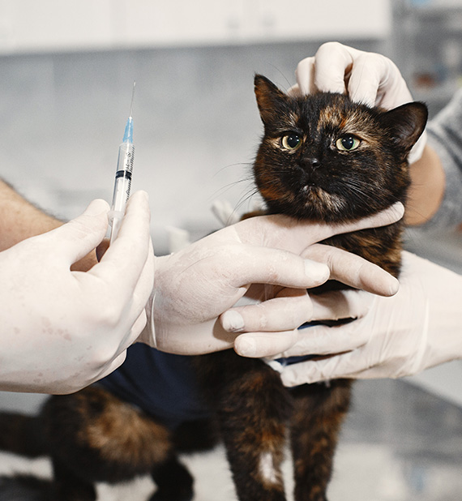

Spay/Neuter
Animal Programs
Spay/neuter and veterinary care are the two programs at the center of our work.
What we fund
Our two programs
Veterinary Care
Help paying for vet care
A directory of organizations that offer financial help with vet bills, nationally and by state.
Browse the directoryVeterinary care
Veterinary Care Help
Here is a list of organizations that provide financial assistance to pet owners who are having trouble affording veterinary care. Keep in mind that each organization is independent, and therefore, have their own set of rules and guidelines as to how they distribute assistance. This means you will have to look into each one individually to determine if you qualify for assistance.

National organizations
Breed Specific Assistance Programs
By state
State-Specific Programs
California
Colorado
Connecticut
District of Columbia
Georgia
Massachusetts
-
Massachusetts SPCAmspca.org
Provides financial assistance for pet owners receiving services at one of its three medical centers:
- Angell Memorial Animal Hospital-Boston350 South Huntington Ave.
Boston, MA 02130617-522-7282 - Angell Animal Medical Center-Nantucket21 Crooked Lane
Nantucket, MA 02554508-228-1491 - Angell Animal Medical Center-Western New England171 Union St.
Springfield, MA 01105413-785-1221
- Angell Memorial Animal Hospital-Boston350 South Huntington Ave.
- Phinney's Friends (MSPCA)mspca.org
-
The Sampson Fundsampsonfund.org
The fund is to benefit companion animals of Cape Cod and the adjacent islands of Nantucket and Martha's Vineyard.
Michigan
-
Michigan Humane Societymichiganhumane.org
Michigan Humane Society maintains three veterinary clinics:
- MHS Detroit Center for Animal Care7401 Chrysler Drive
Detroit, MI 48211313-872-0004 - MHS Rochester Hills Center for Animal Care3600 W. Auburn Road
Rochester Hills, MI 48309248-852-7424 - MHS Berman Center for Animal Care900 N. Newburgh Road
Westland, MI 48185734-721-4195
- MHS Detroit Center for Animal Care7401 Chrysler Drive
Nevada
New York
Rhode Island
Texas
Washington
Make it possible
Help fund these programs
Your support helps shelters and families get animals the care they need.
Donate today